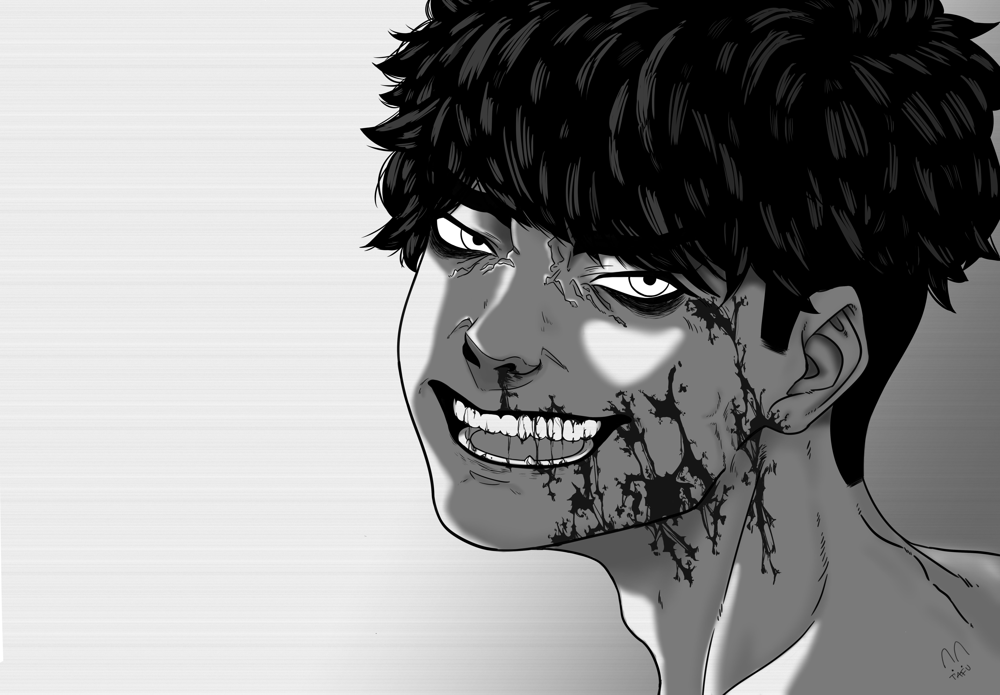

Troisième Chapitre 1er partie : L'annonce Des Démons

Chère Journal,
J’ai entendu parler de la nouvelle technique de Tangetsu : Le Grand Lac. Quand je l’ai vue de mes propres yeux… j’ai été émerveillé. Sa maîtrise, malgré son jeune âge, était impressionnante.
Je n’ai jamais porté les Senju dans mon cœur, mais je dois bien l’admettre : je l’admire, un peu. Malheureusement, dès que Hasano est apparu… j’ai flanché, me faisant complètement humilié devant lui.
La honte m’a englouti. Noctis, mon cousin… mon presque frère, m’a porté pour m’éloigner.
Hasano nous a alors annoncé une nouvelle glaçante : le chef du clan avait disparu, et une compétition entre nous deux allait être lancée pour obtenir Kusanagi (je me souviens de son aura pleine de sang).
Comme si ça ne suffisait pas, il a attisé l’orgueil de Noctis, le poussant à révéler ses Sharingan. Ça m’a profondément agacé. Je sentais qu’il jouait avec nous comme des pions.
En repartant, je suis tombé nez à nez avec le Senju...
Troisième Chapitre 2ème partie : La Ronce et le corbeau
"Le Corbeau se confia à la lune mais celle ci n'écouta.
"Le Corbeau se confia à la Ronce et celle-ci l'empala..."
Je me confiai à Tangetsu… Je lui parlai de ce que je ressentais, de mes peurs, de mes doutes, surtout à propos de Noctis.
Mais Tangetsu resta de marbre. Presque moqueur, même… Comme si mes mots n’étaient qu’un mauvais sketch.
Il me fit signe de le suivre à l’écart, loin du champ de vision de quiconque.
Puis soudain, il me colla un kunaï, une lame glaçante sous la gorge.
Le piège était si bien ficelé… Je ne pouvais ni crier, ni fuir, ni même attaquer.
« Shhhh... Ne fais pas un bruit. » souffla-t-il.
- « Me-... MEC, tu fais quoi ?! »
- « C’est pour ton bien. » dit-il, avec un sourire faux, un mélange de pitié feinte et de dégoût.
- « Tu comptes me faire quoi ?... »
- « Rien… ou peut-être ÇA. »
Et sans prévenir… il me planta un kunaï dans le bras.
Je hurlai.
Il éclata de rire. Un rire tordu, cassé, presque monstrueux.
« PFAFAHAHAHAH ! Tu es vraiment la risée des Uchiha, en fait ?! Tu avais raison. »
Il reprit ensuite un ton plus sombre, tranchant comme une lame.
« Cependant… comme Noctis tient à toi, je vais te garder en vie. Mais n’oublie jamais ceci : être faible ne sert à rien. Soit tu vis et tu deviens puissant, soit tu meurs… et tu fermes ta gueule. »
Ses mots frappèrent mes tympans comme un coup de tonnerre dans le silence.
Alors qu’il s’éloignait, il m’asséna un dernier coup… droit dans le ventre.
Je tombai à genoux, le souffle coupé.
Ce jour-là, une chose s’ancra dans ma chair, plus profondément que ce métal froid : Le sang coulait et ma vue rougis :
Je me vengerais.

(je crois avoir éveillé le Sharingan je vais en profité pour m'entrainer au Bukijutsu avec Talion comme ça je défoncerais la gueule à ce CONNARD DE SENJU DE MERDE à Tangetsu)